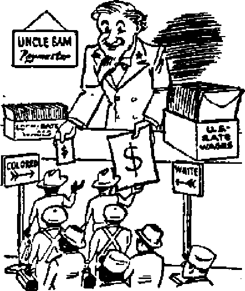

THE MISSION! OF THIS JOURNAL
New* «ourc«a that ore abte to keep you d,Wnkc to the vital 1mu« of our times must be tinfirtterad by cenaarship and selfish interEBt*. “Awake 1" hu no fetter*. It recflgnizeM facte, faces facte, is free to publish facts* It is not bound ty political ambitions or obligations; it is unhampered by advertiser? whose toes must not be trodden on; it is unprejudiced by traditional creeds. This journal keeps itself free that it may speak freely to you. But ft does not abuse its freedom. It maintains integrity to truth.
“Awake!” uses the regular news channels, but to not dependent on them. Ite own currespondeate are on all continente, In scores of nations. From the four corners of the earth their uncensored, on -the* scenes reports come to you through these columns. This journal’® viewpoint is not narrow, but is international. It Lb read In many nations, Ln many languages, by persons of all ages. Through its pages many fields of knowledge pass in review’—government, commerce, religion, history, . geography* science, social conditions, natural wonders—why, ite coverage is as broad as the earth and u high as the heaven*.
“Awake J” pledges itself to righteous principles, to exposing hidden foes and subtle dangers, to championing freedom for all, to comforting mourners and strengthening those disheartened by the failures of a delinquent world, reflecting sure hope for the establishment of a righteous New World.
Get actpiflJnted with “Awake!” Keep awake by reading “Awakel”
Pcsussaa Ukhcovtolt Bt WATCHTVWKK MBLE AJW TRACT SOCIETY, INC.
117 Adams B'rwl HrwikLjo t, N, ¥., U, f, A.
N, IL Kwocm, Pr—lfat GftAMT SnmtR. finnrettry
Five cariti a copy Ona dollar a yvai*
ihdiM be wwt to rftet to M*
UT is ttlipElua viLh rqU>dui* ku fwrute nf* (tannery ot mrutr BcnrtUnt ire atnpMK Br^cLlzn from cvjblrlH whm no Art It krtiS, br In t*rtiiLluiiu) cimj ooij> IhswijOta
rrtu in ojStnin wirtrtw an u>e atotod to Ini ciirrtuts.
Nall** uiirttta Fwlto rviwnl btank) li at Just t» taw tahn ■Moiplka prptaw
CSt* *f MAw vhm mt to tafca mi* Tr ajir+aJ Grille viihkn cue weth. thn4 oij u tall u new addin.
OBn lean? tsubialpUon Bito
tortn. d.L. Ilf «*■» St. Brupkipi i, n.Y. 11 AcMwMa. II Bcftrfirt M . SvuJiMl, N.8.W. 5i Cautoa, *0 Irvla Ate., Tenoto 5. OnLriv tl MUM. 31 CTann Trnm. iadail w £ M |MO Bftlra, |H Um Rmim. Eapa Tm Bl
IitnS to MvU'UbM toUff IL BnMIfK ■-1, SU rf Hart* I. □ ST& Frtotod la (J. B A
lomc’a Victory in Western Germany Former Naais Return to Power Pope’s “Holy Year" Pardon Plan Securely in the Saddle
beautiful Cones of DtstnictiDn Theory About Volcanoes Types of Eruption
3oup bo Nuts
Pattern for a Good Meal
Inimal Stories
DifipiflOMi Persons Problem—a PnMte with Many Com plication 3
3
4
5
6
8
9
10
13
14
16
Catholicism vs, Comm uni am
United SLoteb Legislation
Discrimination by Catholic Church The Problem’s Solution
Sobering Figures on Intoxication
Et&ae Prejudice in the Panama L’ahaI Zone
Two Wage Scalia
More Ei scrim inat ion
"Thy Word Is Truth”
Jeans the Promised Messiah
Radio Intolerance in Denmark
Watching the World
18
19
10
20
20
21
22
23
25
27
29
^^Now it is high time to awake/— Romans 13:1! 9)
Volume XXXI Brooklyn, N. Y., April 22, 1950 Number 8
ROME’S VICTORY IN WESTERN GERMANY
Here i» an eye-opcnlng article on a little-advertised subject. Based on reports of "Awake!” correspondents here and abroad, and backed up with historical facts, thia short article gives the reader a revealing picture of papal politics in Germany,
.. ■ ■ ‘---------------------------- . - -- -
C^'T'HE Western German Federal Re-
J. public is a child begotten in the Vatican and born in Washington.” Thus spoke the Protestant church president, Dr. Niemoeller, when interviewed a few months ago by a reporter of the Wies-badener Kurier. AVith great regret this high church dignitary bemoaned the fact that ‘Protestantism has lost the battle* against Catholicism. All that remains is to make some official changes in the 1648 Protestant victory-treaty of Westphalia. At that time, it will be recalled, Catholicism lost the battle and Rome’s undisputed rule over Germany was broken. Thereafter, Protestantism came into power and continued until it reached its heyday at the turn of the last century, when the Protestant “Caesars” of Hoh-enzollern,' acknowledged as a symbol of this, were at the peak of their power. Since then another battle has been fought, and this time Catholicism has won.
The steps toward this present victory, as any creditable observer of European affairs can testify, are well marked. Under a black cloud of unrest and economic depression that hung low over Germany in 1933, the Catholic Center party rolled in a Trojan horse, and out popped Catholic Hitler and his goose-steppers. Hitler’s Catholic advis-
ers quickly established communication lines between Germany and the Vatican with the signing of a concordat. Restrictive measures and curtailments against the Protestant church followed, and that mighty organization, representing two-thirds of the populace, fell down in worship of the Vatican-sponsored state. .
Spurred on by this victory, the Axis war horse dashed wildly across Europe in an effort to re-estahlish the “Holy Roman Empire of the German Nation”, but hefore this goal was reached the Nazi-Fascist war mount weakened and fell in battle. However, to the amazement of all Europe, the Vatican rider of this beast, with all Jesuitic dexterity, cunningly changed horses in midstream and rpde in on the Allied tide of victory in 1945. That this is true may be seen from the postwar developments in Western Germany.
Before the war the population of Germany consisted of about twice as many Protestants as Catholics, but the Yalta agreement changed this picture by allowing millions of refugees from Eastern European countries, the majority of whom were Catholics, to euter the Western zones. This, however, while a significant factor in Vatican strategy, wTas of secondary importance when compared
with the diplomatic developments that took place on the higher political levels. It was on that plane, in the creation of a new national government in Western Germany, that Rome’s greatest victory was won.
United xStatee ambassador Robert Daniel Vurphy is a devoid Catholic and one of Rome’s most loyal sons. He showed this during the war by distinguishing himself ns a close friend of the Vatican-blessed Vichy French government. It was no nccidentHl matter that such a one as Murphy was appointed political adviser to Gen. Eisenhower, with the assignment to set up the machinery for an Allied military rule over the conquered Reich. Here, then, is the explanation as to why the occupation’s policies and decisions hnvp been so delightfully favorable to the Vatican, why stringent peace terms on defeated Germany were not imposed, why the “denazification” program was such a farce, and whv the papal concordat signed hy the Hitler government is still in effect.
Though severely criticized for these pro-papa! policies, Rome's faithful man Murphy continued in his important behind-the-scenes job as political adviser to Gen. Lucius D. Clay, the military Sovernor of the U. S. zone. In this hid-en position, Murphy was most instrumental in setting up the present Donn government according to blueprints okayed by the Vatican’s political architects.
In reality, Germany's new federal republic is n Catholic state. Konrad Adenauer, chancellor of the Vulican-sponsored Bonn government, like Robert Murphy, is a loyal son of Rome. When papal-blessed Mussolini was in his glory, and Adenauer was mayor of Cologne, he sent the fascist dictator a telegram saying that Mussolini’s name would be entered in golden letters in the' history of the church. During Hitler’s reign, when ha had a falling out with the higher-ups, he was allowed to take refuge in the Maria Loach Benedictine monastery, where the monks took good care of him. Cathohc extrao rdinaiy, Adenauer is a very close friend of Cardinal Frings of Cologne, so much so that, his opponents charge that besides Bonn the new republic has a second capital in the cardinars palace at Cologne.
Inasmuch as Cardinal Fringa had thrown his whole weight into the election campaign, he was obviously happy and satisfied witfi the results, for, besides Adenauer, seven out of thirteen ministers elected were members of the Catholic controlled CDU and CSU parties. Relaxing after the election, the cardinal declared: “The churchman now return to its real task, such as marriage and family, rights of parents and schools, without having to give up her influence on public life"
The denazification program outlined at Yalta and Potsdam has been so greatly modified and changed from 11 is original purpose during recent years that it is no longer recognizable as the same program. Some people sarcastically speak of it as the “renazification” program. Instead of allowing justice to inflict punishment for guilt, the genera! policy seems to be to forgive and forget. For the victims of Hitler's terror, who suffered so much under Nuri rule, such a policy is very bitter indued. It is Ihere-fore sugar-coated with the following explanation: Nazism is a disease, hence those bitten by the bug should be “quarantined” for a brief period, nursed along with special treatment, and then turned out to “convalesce” and grow strong again. If that were only true! But actually, many of those that are turned loose continue as carriers of the loathsome Nazi germs.
It is no secret, the Roman Catholic Hierarchy has done everything Ln its
power to shield and protect and intercede in behalf of the top-notch Catholics that belonged to the Hitler gang. The Vatican tried to move mountains to prevent the execution of “Father’' Tiso, puppet dictator of Czechoslovakia. Pope Pius XII intervened in behalf of the sentenced war criminal G reiser. Cardinal Faulhaber sent a telegram to defense lawyers on October 5, 1946, reading; “Please submit petition for pardon for Hans Frank as intercession to highest church authority in course of transmission.” Thus, Rome’s prelates, inside and outside Germany, both secretly and openly, did everything possible to intercept, hinder and cancel the program that was originally designed to root out and exterminate the Nazi seeds of hate and oppression.
As a^ result of tbe Vatican’s deliberate interference with the wheels of justice, many of the same old gang are now back in power in Western Germany, not only in politics but also in every phase of life. Dr. Hans Ehard, for example, who is said to be a “devout Catholic”, is now minister-president of Bavaria. Under Hitler’s rule he was presiding judge of the Appellate Division of the courts.
The New York Times reports that in Catholic Bavaria, of the 12,000 Nazi teachers that were removed from the schools in 1945, 11,000 are now back in their old jobs. The same thing has happened in the universities, and all of this with the full knowledge and consent of the United States government It is with dismay and astonishment that Protestantism has watched these developments since World War IL At every turn, at every crossroad, in the courts, in the occupation’s headquarters, the agencies of the Vatican have been there to protect Rome’s interests, and to obstruct, turn aside or destroy all measures and orders that would weaken tbe Hierarchy’s entrenched position of power.
Pope’s "Holy Year'* Pardon Plan
In his send-off message for this 1950 “holy year”, Pius XII devoted a large amount of space outlining the Vatican’s purpose to have the Allies “pardon” and “forgive” those Nazi criminals who had so faithfully supported the pope’s cause in Europe. “During this Holy Year . , . bury all the past in sincere repentance,” commanded the pope, for never “was a holy year better suited to counsel gentleness, indulgence and pardon between man and man”. Reading on, one gathers from this carefully worded plea that the pope’s “heart was pierced with bitter gnef”, not necessarily because of the war, but rather because he sees in the Allied victory “evidence of apostasy” and rebellion against Rome’s dictates. Instead of taking vengeance, he argues, those whose duty it is to “administer justice aright” should extend “charity and mercy” to those guilty of war crimes, whom the pope says have “erred rather than sinned”.
Coming directly to the point of clemency, the pope spoke plainly:
May the Lord inspire all who are in positions of public responsibility with thoughts of reconciliation and concord, and without prejudice to common good, let an end be put to the last remnant of those extraordinary laws [the war-crime laws against those who murdered millions], which have nothing to do with the common crimes deserving just punishment [such as stealing a loaf of bread].
Hence ... we implore governments, especially Christian governments, to exercise generously their right of pardon, and put into effect, on an occasion so solemn and propitious as the holy year, that mitigation of punitive justice provided for in the laws of all countries. ... ,
We, and along with us the hearts of ao many afflicted relatives [of the Nari gangsters] , ask this consolation; for the happiness of His sons in the joy of the Father; here we express publicly our sincere gratitude to those governments [such as Spain] which have in various degrees given favorable consideration tn dur wish or [like the United States] have left us with some hope of obtaining ita fuMllmont,
One of the first to benefit from this papal plea for clemency was Baron Ernet von Weiszaecker, who, during the closing years of the war, was Hitler's ambassador to the Vatican. After the war the Vatican refused to turn Weiszaeeker over to the Allies, but instead gave him haven until the victor’s initial wrath was past When he was finally brought to account, he got off with a very light sen-tenbe of seven years. Then, on February 2 of this year, in answer to tbe pope’s plea, his sentence was reduced to five years, which means he will soon be set free on parole. Others also, faithful sons of the Church of Rome, were recipients of similar consideration.
If Protestants are surprised and alarmed to see Rome riding again in the saddle in control of the new federal government, it is probably because they have been sound asleep much loo long* Nie-moeller’s cry that the new republic is a child fathered by the Vatican and mothered by Washington sounds as if it comes from one who is awakened from a long night’s sleep only to find that a thief haw rubbed his house. However, if Protestantism feels it has been robbed and cheated out of power and control of Western Germany, then it can blame itself for leaving the dour open and refusing to heed the repeated warnings given by passers-by.
The Protestants can blame themselves for allowing themselves to be dragged into the political parties labelled “Christian” but which are run and controlled by the Catholics. With blind credulity the Protestant clergymen have supported the CDU (Christian Democratic Union) and the co-party of southern Germany, the CSU (Christian Social Union). Duped into believing that these partiew are not Catholic, but “Christian",
6
hundreds of thousands of Protestant church members, headed by their clergymen, gave these parties their votes m the battle for power. Thus Protestnntisrn had a large hand in knocking itself out and helping Rome gain the victory in postwar Germany. With Protestantism beaten into a secondary position, Rome feels safe now in boasting a little over her victory. In the Frankfurter Rundschau, December 30, 1949, for exnniple, Catholic priest Hermann Diem brags that “the line of Adenauer through Cardinal Frings to the Vatican is distinctly visible" I
Such overwhelming victory on the part of the Catholic parties, and the return to power of so many Nazis are taken as an indication by the radical elements that they too can rtuw cornu out of hiding and return to their former glory. Consequently, in recent months the groundswells of spirited nationalism have washed up on shore shipwrecked pieces from the juggernaut of National Socialism, parts of which are being gathered and assembled as the frmnewrk of a neo-Naziam. On January 21 the Society for the Reunification of Germany was formally organized at Bad Homburg. The next day at Kassel the German Reich party was created amidst the ringing of ''Deutschland Ueber Alles" (Germany Over All), to the accompaniment of much sword-rattling. On February 8 it was reported that another group of Nazis, called “Katakoru he Schein werfer” (Catacomb Reflector), with headquarters at Munich, was clamoring for more action. Besides these there are other groups coming to the fore with similar designs, intentions and aspirations.
John J. McCloy, United States high commissioner of Germany, told the pre^w that these developments are "not particularly significant"; nevertheless, he hurried to Washington toward the end of January for secret conferences. Shortly
AWAKE!
thereafter McCloy scurried back to Germany and immediately made what was described as a blunt speech, the toughest given in many months. It was aimed at the fanatical elements that are agitating for the remilitarizing of Germany.
No, there was nothing in this speech of McCloy's to show that he is opposed to the course Rome’s Bonn government is sailing. In fact, all indications are to the contrary. A careful analysis of the speech and the events that followed show that McCloy’s visit to the United States and his warning speech to the German people were aimed at strengthening the position of the Bonn government. It is a young child yet—this Vatican-Washington offspring—and it must be watched over and protected, lest its enemies overthrow it McCloy therefore repeated a few things that Adenauer had said. Then, the day after making the speech, McCloy held a conference with Adenauer, which conference, it is said, "took a particularly satisfactory course an* resulted in an accord on all points.” The same day a special dispatch was sent to the New York Times, reading:
The official press service of the Christian Democratic Union, Dr.. Adenauer's party, also was quick to counter any suggestion that Mr. McCloy’s blunt warnings yesterday had anything to do with the federal government. As far as the [CDU, Catholic-controlled] party is concerned, the agency said, Mr. McCloy's statement represents “support of the federal government and its policy’7, ... It can he said on the highest authority that the last thing Mr, McCloy had in mind was to weaken the parliamentary position of the Adenauer government.
Even the rabid Nazis took courage from the fact that McCloy failed to announce any major cracking down on their activity. Within a fortnight after his vocal scolding of them, a German court acquitted and set free Wolfgang Hedler, A huge banquet was held at which 200 Nasis celebrated Hedler’s release. This Nazi, a deputy member of the Bundestag parliament, had made an anti-Semitic speech last December in which he said that while extermination of Jews in gas chambers might be considered "wrong”, yet there were other ways of "getting rid of them”. The three judges that acquitted Hedler, it should be noted, are themselves Nazis and former members of Hitler’s party.
So, with the saddle cinch made more secure, secured by the hands of former Nazis as well as the hands of Allied stsCble boys, Rome joyfully continues her gay ride of victory in. Western Germany, a ride that will undoubtedly take her over some rough ground in the future. Her joy and gladness will be short-lived. Therefore, let no honest and sincere Catholic rejoice in the present Vatican victory. Neither let lovers df righteousness among Protestants grieve or gnash their teeth because Catholicism holds Germany’s reius of government. Conditions were no better when Protestantism rode high. Nor is there any suggestion here that conditions would be any better if communism were allowed to take over. All forms of totalitarian rule, be they called communistic, fascistic, nazis-tic, monarchic, or something else, have miserably failed to satisfy even man’s basic needs or desires. Instead of putting their hope and trust in such manmade, demon-inspired, Satan-ruled governments, let all lovers of peace and righteousness look to the Theocratic kingdom of God as man’s only hope. Let them rejoice, too! For shortly now this righteous rule will encompass the earth, and will from then throughout eternity be a blessing to mankind and an honor to Jehovah 1
to
By **Awalc«!” corrMpocufent In Nicaragua
A HIGH and beautiful mountain, loVely in the perfect symmetry of its cono-ehaped heights, in iU extensive forests and the cultivated fields that adorn its lower slopes, in its pure white crown of snow and in the equally white clouds that billow around its slopes and often obscure its top, is accepted by the thousands of persons that live on or near it as hardly more than a backdrop to the theater stage. One day, with a perfectly clear wky, thunder is heard, and the earth trembles as if in sympathy. Some persona arc alarmed, others pay no heed. The noises continue over a period of days, and the people grow to accept them as normal.
But, suddenly, before their astonished eyes, a giant column of gray-black smoke, shot through with fire, is expelled from the top of the mountain, seemingly as-eending to the very heavens. Tremendous flashes of lightning and thunder such as no storm cloud ever caused throw the neighboring peoples into panic. Many try to flee. Too late! Vast streams of white-hot rock flow down the mountain, blocking any escape, while from the great column of smoke powdery dust, sandy material and even small rocks begin to fall. The mountain, seemingly crazed, blots out nil human, animal and even vegetable life on its slopes. Only then is its blood-lust apparently satis-
5.,- tied • Like a mur d ere r with
out a conscience, once again it is covered with clean snow, and clouds again wrap it in# peace. Then cornu the scientists, geologists and volcanologists. These study the matter blown out of the volcano, the damage it has wrought, make wise predictions as to when it will probably erupt again, and go. Slowly Iff© creeps up the slope of the mountain again.
What caused that tremendous outburst t Why did the mountain lie quiet for so many years, perhaps even centuries, to break forth then with lightninglike rapidity! What energy shot forth those streams of molten rock and lifted those billions of tons of rock and ash miles into the skyT Frankly, man does not know. No man has ever descended into the depths from, which that explosive energy was released, nor its it likely that he will. But be can observe what the volcano ejects in its fury; he can measure ita temperature and study its composition, and make calculations from that. For these reasons there now exists a science, a branch of geology, that deals entirely with volcanoes and their eruptions. It is called volcanology (or volcanology).
But volcanologists are not nt agreement among themselves as to the cause of volcanoes. Some of them thought until recently that the interior of the earth was liquid, having remained thus since the stage of the earth’s creation when the entire gkilie was incandescent, and that the molten rocks, called “magma0 before reaching the earth's surface, then called “lava”, were expelled from that great central reservoir, the center of onr earih.
Others, some even to this day, think that the magma is expelled from "pockets” of liquid material left locally when the "crust” of the earth, its first forty or fifty miles downward toward the center, solidified. Others think that the lava has a local origin within the solid crust, and that it is caused by the melting of the rocks in certain places by determined factors.
The first hypothesis, that the interior of the earth is Liquid, has been discarded as false by most scientists, because vibrations registering on the seismograph (an instrument that registers earth tremors and quakes) show that shock waves pass through the center of the earth as through a solid, and not as through a liquid. For this reason most scientists lean to the opinion that the rocks melt on\y in determined localities.
Their explanation is this: Man has found, by mines or wells that have been dug a few miles into the earth’s crust, that the temperature increases as the depth increases; usually about one degree for each sixty or seventy feet. At that rate, the temperature at a depth of twenty or thirty miles would be well over 2,000 degrees Centigrade, some even estimating it as high as 4,000 degrees. (Iron melts at 1,535 degrees Centigrade.) So this is, of course, sufficient heat to melt the rocks of the earth, and would maintain the interior of the earth liquid, molten, if it were not for another factor, and that is pressure.
The pressure is estimated at thirty-five tons per square inch at a depth of ten miles, enough to hold the rock mass rigid, solid, not allowing it to take on a liquid form through expansion. Where does the heat come from? Some think that radioactivity or various other factors cause it, but the general belief now is that the great-pressure that holds the rocks rigid and solid also causes the heat. It is possible, though, that radioactivity
and other causes combined may be at work in the production of volcanoes. Now, if the pressure upon these superheated rocks were to be lessened they would expand, becoming liquid, molten, or what is called magma. Such a lessening of pressure could come about by an earth fault. ,
An earth fault is a great fracture, where one part of the earth's crust evi-' dently finds a weak place or a lighter rock beneath it that can be displaced or shoved down. Then a tremendous section of rock, sometimes hundreds of miles long, slips down. Or, a fault may be caused by greater pressure within the earths crust, causing a section of rock to be pushed up, as evidently happened to many of the mountains of the western United States. If such a fault, or split, should reach down twenty or thirty miles; or, if two faults should cross each other, making a doubly weak place, the pressure on the rocks below would lessen, and these, in liquid form, would expand and push upward, seeking freedom from the pressure below. The superheated magma could melt other rocks in its path, or, striking a source of water, could turn it into steam with tremendous explosive force, enough to blow its way out. Superheated steam is one of the most powerful explosives known to man. And it is known that volcanic explosions always contain much steam, which often forms a great cloud rising to many miles in height.
There are two great fault lines, where faults, sometimes accompanied by earthquakes, often occur. One such line practically rings the Pacific ocean; the other follows the great mountain range beginning with the Alps, continuing through the Caucasus, and ending in the Himalayas and the East Indies. And it is notable that the majority of the volcanoes known to man lie in these two zones.
A volcano, then, is u hole or opening in the earth’s crust, through which heated matter from the earth’s interior is brought to the surface, piling up into a hill, usually of a conical form. The hill is also called a volcano. This word has come to us from the ancient Romans, who regarded a volcano in the Mediterranean sea as the “forge” of Vulcan, the blacksmith god of mythology. They gave the mountain the name of Vulcano, which name has clung to all the fiery mountains of earth.
Volcanologists recognize fcjr basic types of eruptions : the Hawaiian, the Strombolian, the Vuleanian, and the Pe-lean. The Hawaiian type, taking its name from the great volcanoes of the Hawaiian islands, is characterized by a calm outflow of fluid lava, building up low mountains with very broad bases. The island of Hawaii, the largest of the group, is really composed of five volcanoes, three now extinct, two active. Of these volcanoes, Mauna Kea (13,825 feet, extinct) and Mauna Loa (13,700 feet, active) are in reality extremely high mountains, for their bases are in water 18,000 feet deep, and they thus stand nearly 32,000 feet high. This large island started with a submarine (underwater) eruption, and with its tremendous lava flows has built up to its present height. The lava flows of Mauna Loa are described as having all colors, from hlood-red cones to seas of shiny, jet-black obsidian (volcanic glass). The summit crater of Mauna Loa is very active at times, with great columns of white-hot lava playing like illuminated fountains hundreds of feet high, a truly magnificent sight at night. The latest such fountain display was in 1940.
The second type of eruption is known as th£ Strombolian type, taking its name from the volcano Stromboli in the Lipari islands off the coast of Italy. lu this type of eruption the lava is less fluid, and the escape of the heated gases is at times violent, causing mighty explosions. Gas clouds and ash are often hurled to a great height by the explosions, while pieces of pasty lava are hurled out, harden in the air, and fall back near.the crater-s edge. If these pieces are larger than an apple, they are known as “blocks”, or if still fluid, as “bombs”; if the size of a nut, they are called “lapilli” (Latin for little stones); if no larger than a pea, they are called “ashes”, and the finest particles are called “dust”.
Another type of eruption is that called Vuleanian, similar to the eruptions of Vulcano. The lava of these eruptions is very thick, and between eruptions it solidifies completely in the crater of the volcano, hardening over the top of the fluid lava beneath. When the gas or steam pressure builds up sufficiently in the lower regions, it blows off the top of this crust with a violent explosion. This type, then, is oue of the most explosive eruptions. The world's greatest explosions, such as that of Cosegiiina in Nicaragua in 1835, that of Krakatao near Java in 1883, and that of Katmai in Alaska in 1912 were evideritly of the Vulcanian type, the entire upper part of these volcanoes having been blown away and a tremendous amount of matter ejected. The great explosion of Bandai-sam, in 1888 (Japan), blew off an estimated 2,982,000,000 tons of material.
The fourth type of eruption, the Pe-lean, is famous in history for its “burning clouds”. Evidently the lava in this type of volcano is so thick that it solidifies and entirely stops up the chimney of the volcano. The gas pressure inside builds to such a tremendous pressure that, it lifts the weight of the “stopper”, the heated gases and pulverized lava managing to escape from time to time between the stopper and the walls of the chimney as a powerful blast that generally lasts but a few minutes. The most tragic and destructive example of this type of eruption was Mt Pelee itself, on the island of Martinique, in the French West Indies.
An eyewitness, assistant purser
Thompson of the Roraima, wrote a graphic account of the ‘^burning cloud” of Mt. Pelee on May 8, 1902, and his words are quoted front Satis N. Coleman’s hook Volcanoes New and Old:
For hours before we entered the roadstead we could see flames and smuke rising from •Mt. Pel£e. The spectacle was magnificent. As we approached St. Pierre we could distinguish the rolling and leaping of the red fiames that belched from the mountain in huge volumes and gushed high into the sky. Enormous clouds of black smoke hung over the volcano. There was a cuusLaut muffled roar. . . . There was a tremendous explosion about 7:45, soon after wc got in. The mountain was blown to pieces. There was no warning. The side of the volcano was ripped out, and there was hurled straight toward ub a solid wall of flame. It sounded like thousands of cannon. The wave of fire was nn ns and over ns like a lightning flash. It was like a hurricane of flic. . . . The town vanished before our eyes. . , . Wherever the mass uf fire struck the sen, the water boiled and sent up vast clouds of steam, The sea was tom into huge whirlpools that careened toward the open sea.
The “burning cloud” traveled the eight kilometers to the city in a matter of two or three Luiriiil.es and struck the city with a heat estimated at 800 degrees Centigrade. Of 28,000 inhabitants, only one person escaped with his life. A convict, imprisoned in a deep dungeon, was found alive four days later.
After this blast, followed others, more than ten in 1902. After the eruption there emerged from the crater of Pelee a tall Column of black basalt, towering almost 1,000 feet from the lip of the crater, rising or falling according to the gas pressure under it In thirty-five days it rose about 800 feet. This was thought to be the plug of solidified lava that had stopped up the volcano’s chimney. One can hardly imagine the tremendous power necessary to lift the great column of basalt, which Heilprin estimates had a cubic content approximately equal to that of the Great Pyramid of Egypt. lu
July, 1903, the tower began to break off and fall, and soon disappeared.
The Calderas and the Somma
A very interesting feature of the study of volcanoes is that of the calderas. This is a Spanish word moaning cauldron, and in volcanology refers to a crater of great size, shaped like a basin or open kettle. Some calderas are formed when a great explosion blows away the top of a volcanic cone, and rain water or springs generally fill the crater to form a beautiful lake. The volcano Uosoguina, in Nicaragua, which blew off about 3,000 feet of its 7,000-foot cone, opened a caldera of about twelve miles in circumference, which is filled with an emerald lake of rare beauty. A caldera may also be formed when the top of a volcano collapses into its interior after the eruption of h great amount of lava, as in the case of the caldera occupied by Crater Lake in Oregon. Other calderas seem to have been caused by a single tremendous gas explosion, which blows out a roughly circular “tube” or chimney, sometimes to a great depth, and piles up on its rim a belt of rocks and volcanic material expelled. Nicaragua abounds in this form of caldera, most of them now filled with lakes of gemlike beauty.
Often a volcano builds up a high cone, with a crater inside, then after a period of inactivity a. violent explosion will blow away part of the lip of the crater, leaving a * semicircular wall. As time passes a new cone is partially built up inside the old wall. A good example of tbis is Mt. Vesuvius, which, in a tremendous explosion at some past time, blew out a great explosion crater. The part of the old crater that still stands is called Mt. Somma, and the new cone, Vesuvius. This name somma is applied to any similar volcano in any part of the world.
Violent eruptions are often accompanied by dashes of lightning, described as very brilliant, and by such thunder as bas seldom been heard by man. Accord-
ing to volcanologists this is caused by the violent rubbing together of the fine sand particles, which produces electrical energy* That such contact of sand parti’ ciee can.' cause electricity may lie ob-served in a simple sand storm, in which a wire hung up will bring a regular spurt to a ground*
The belching of flames, as seen in an eruption, is caused by the tremendously heated gases, such as hydrogen. On contacting the oxygen of the air these immediately burst into flame, this being the only true flame generally seen in an eruption. Very many eruptions are accompanied by a heavy fall of rain, caused hy the great clouds of steam which the eruption sends off, which condenses in the upper atmosphere* Such rains often cause worse disasters than the eruption itself, as they turn the great amount of volcanic ash and sand into mud, and torrents of mud often sweep down the sides of the volcano to bury cities at its base. Such was the case of Herculaneum, buried under mud and ashes by the historic eruption of Vesuvius A. D. 79, the saflic eruption also burying Pompeii.
Between Java and Sumatra, in the Sun da Strait, lies the volcanic island of Krakatau. After some 200 years of calm, this island, composed of three volcanoes whose height ranges from 500 to 2,000 feet, suddenly burst into violent eruption on May 20,1883. Its explosions then were heard for over a hundred miles. It continued its activity thus for about two months. On August 26 the volcanoes shot up a cloud of dense black smoke estimated to be at least seventeen miles in height, rent with flashes of lightning. The terrific explosions, heard on the neighboring islands, permitted no one to sleep that night*
About 7 o’clock the next morning the air was rent by four explosions surpassing anything man has ever heard. They were clearly heard in the south of Australia, about 2,080 miles away, and even on Rodriguez island, nearly 3,000 miles away, where they were heard and recorded four hours after the actual explosions. If these great explosions had occured in London, they could have been heard in New York in nhont four hoars; and, in the other direction, the sound would have crossed Europe and penetrated into Siberia several hundred miles.
It was not the noise, however, that caused the damage, nor was it the atmospheric waves, which trave/ed four tinics around the world and affected the world’s barometers. Nor was it the volcanic sand, though this, having been shot twenty miles into the air, and traveling at h tremendous speed, due to the high winds at that altitude, caused brilliant sunsets and other phenomena in aff parts of the earth. No, the damage was caused hy the force of the explosion, which blew away about two-thirds of the island and caused a great tidal wave on the coasts of the neighboring islands, and, in fact, in all parts of the earth. On the nearby coasts the waves reached a height of 115 feet, and 3G,380 persons perished under them. Ships were hurled inland to a distance of nearly two miles and left stranded.
These titanic forces certainly do show puny man how weak are his most powerful weapons, even hig atomic bomb, compared to the mighty power that Jehovah God alcme holds in Uis hand. At Armageddon, “the battle of that great day of God Almighty,” men who have scoffed at God’s power will feel it even more mightily than in a mere volcanic eruption. Only with the end of this old world under Satan the Devil will death and destruction from volcanoes cease. “They will do no harm or destruction on all my holy mountain; for the land will have become full of the knowledge of the Loan, as flic waters cover the sea/' —Isaiah 11:9, American Translation.
' \ VENU-MAKI NG is like picture-paint-IVling. Many people paint and many people cook, but not all are artists. A real artist with brush and canvas has to know how to arrange the individual colors in a pleasing design or pattern with proper balance, tone value and harmony, and when finished the whole composition must produce a pleasing picture. No less skill is required by a culinary artist in preparing a meal, and yet few people are aware of this fact. A cook may know how to bake the best cake or create a superb salad, but if as parts of a picture these individual dishes clash with one another and do not harmonize with the rest of the meal, or if there is a sameness and monotony in the food, the meal will not satisfy completely.
Who is coming to dinner, and wThat are their particular likes and dislikes? Are their tastes trained to.enjoy Spanish, Chinese, French, Scandinavian or English dishes? If the answers to these questions are known ahead of time it will be a big help in making up the menu, for, after.ail, a meal should be designed to please and satisfy those eating it. Other important points that must not be overlooked include cost and budget matters. It is no easy task to feed a family on a small budget. It takes extra skill and wisdom to build an appetizing’ menu when only low-cost potatoes, beans, peas and grain products can be afforded. If milk, eggs, meat and succulent fruits and vegetables can be obtained, then a meal having great psychological effectiveness as well as physical benefit can be prepared.
Nutritious value in the menu should depend on who is being fed. Hard-working men and growing children cannot subsist on a menu of “bird food” prepared for ladies with obese propensities. The season of the year and the occasion for the meal are also important matters to consider in making up the menu. Hot weather calls for light meals that are easily dige&ed; cold weather demands heat-giving meals,7 rich in fat and starches, Other points are the ability of the cook and the kitchen facilities at hand. Do not expect a cook to prepare a seven-course banquet in the small end of a house trailer for a large number of people.
It is true, the cook who prepares a fine meal, like the picture-painting artist, develops much skill through practice, but only if he adheres to and follows the basic rules of the art. First of all, the composition of each dish must be excellent in every respect—cooked well, seasoned properly, dressed tastefully, distinct and individual in character. There must be a judicious selection of food material, having due regard for the season of the year. Each item on the menu must be different in composition and in the mode in which it is cooked. What a monotonous meal if only four kinds of soup were served and nothing else!
Speaking of mcinoUmy, think how wearisome and tiring the meal in which all consideration of color is disregarded, when yellow corn, yellow carrots and yellow squash are served with yellow cheese, egg omelet and yellow custard dessert. The same is true if green-pea soup, green string beaits, green asparagus, green spinach, green peppers and green endive salad with green olives are alt served together. How sickly and unappetizing the menu that is made up of white potato soup, white mashed potatoes, white potato salad, white turnips, white boiled cahhage, white fish, white cottage cheese and white bread! No two dishes should be similar in composition, appearance, texture or taste.
Variety is the spice of food. Yet n menu highly seasoned with variety must also have that al I-important ingredient, harmony. It is not so much variety and harmony as it is variety with harmony; for only when these two principles of art are joined in a bund of'unity is the meal a success. The various dishes and courses served, while distinctly different from one another in appearance and taste, must also be in harmonious agreement with one another. The sauces and garnishes used to accompany the various dishes must be distinctly diffrmit from each other in color, taste and flavor, and at the same time be harmonious in flavor with' the food they accompany. For example, a lemon-flavored sauce is a misfit when poured over a strawberry or peach pudding.
Should Meals Be Served in Courses?
Dramatic art does not allow the various acts of a play to run simultaneously on a great theatrical stage. The art of music does not permit the listener to keep one ear on the final movement of a symphony while listening to the first pud seennd movements. Those accomplished in the art of writing and speech -making unfold their productions chapter by chapter—first the introduction, then the body, and finally the conclusion. By like reasoning many feel that the artist in the kitchen must follow these same rules, letting the menu gradually spread itself on the table, course* by course.
How many courses should be served! That all depends on the time, place and cireumutjirufeM, whether it is breakfast, luncheon or dinner, whether it is a Heli man’s banquet or n poor man s humble supper. And while the experts may disagree on what comprises a sijccessfiil menu, they will agree that all menus, be they simple or grandiose, must have one thing in common: they must have one focal point of interest, one outstanding and distinctive dish, the shining star of the meal. It may be a special soup, a superb roast, a ino11th»wait*ring salad, a sense-tingling dessert, or it may be just a soul-satisfying pot of beans. But whatever it is, be sure it is emphasized and played up as the big event of the meal. Do not allow it to be surrounded, buried and lost amid a shuffle of other dishes. Companion dishes ns (Mistars must play secondary roles and never steal the show from the principal actors uf the gaslronomical opera.
The success of a meal is not necessarily measured hy the number of courses. A two-course meal ch.ti he hs great a success as a two-part play. Only remenv ber that in serving such meal, the food must he exceptionally good and highly approved by all present. Menus, however, reach their pinnacle of perfection when au artist of cooking contrives a seven-eourse dinner with all Ilie.trimmings. Fronuhundreds of thousands of dishes, a few are chosen; from 10,000 soups, one is selected; from as many or more desserts, the right one is decided upon. Artfully put together, & few dishes add up to a single masterpiece of cooking.
First, there are the appetizers, the hors d'oeuvres, which, as the prelude to
the' meal, are most appropriate. They may consist of marine delicacies, like pickled frogs' legs, iced caviar, or of more common things, such as pickled herring, iqed melon, stuffed olives, cheese on crackfd’S, or salty peanuts. Tempting to the eye, tantalizing to the nostrils, teasing to the palate, these tidbits of sharp, biting flavors are only served in limited quantities to stimulate and arouse the appetite.
Next comes the soup. Or, for those who bring their appetites already aroused, the appetizers can be dispensed with and this second course can be served flrst. Hot and savory, soup heightens the appetite without satisfying hunger. It also prepares the stomach for the rest of the meal; and even in hot weather, contrary to popular opinion, a bowl of hot broth is very healthful, a good aid to digestion.
Tn this typical -seven-course dinner, a baked fish that has been stuffed, and over which a tasty sauce has been poured, may next be brought in. Small portions are served, for in reality this rs only a delightful interlude between the soup and the main course that is to follow. The climax is approaching, and the attention of the guests is now centered on the focal point of the whole meal, the principal course, which in this case can well be chicken, accompanied by appropriate vegetable dishes.
By the time the nourishing main course is finished hunger has been greatly appeased and the appetite has been slowed down considerably. There is, however, no overstuffed or uncomfortable feeling, nor is there that completely satisfied and contented feeling. Something is lacking. How refreshing then when one sets his teeth into the next course, a cool, crisp salad I After eating so much highly seasoned food the palate must be awakened before it can enjoy the dessert, and a brisk fruity salad is just the thing to do it.
Then the dessert. This course must not be a let-down, nor should it be rich and heavy, lest it rob the main course of its virtues. Sweet it must be, with a lingering flavor, artistically arranged to take full advantage of beauty and color. After this may come coffee and bfandy; but this final course varies with the design and structure of the menu, and sometimes a bowl of fresh fruit and nuts is more appropriate.
It must be .emphasized too that time, atmosphere and environment are very much a part of the menu and contribute to the success or failure of a meal. People of this nervous, fast-moving, food-gulping world should take sufficient time over a meal to benefit from it fully. The surroundings can add much joy and pleasure to the meal. An oriental meal grows in enjoyment when served with oriental music and an atmosphere scented with sandalwood and decorated with gay colors befitting the Far East. When eating Grandma’s down-on-the-farm country cooking, a rustic old-fashioned dining room with fiddle music should be included in the footnotes of the menu. On the other hand, if the meal is an outdoor affair, the open fire, the smell of pine forest mingled with smoke and the tantalizing aroma of roasted meat provide the perfect surroundings for a barbecued or steak dinner. Skip the dainty tablecloth and fine silverware on such an occasion and bring out the guitar with western music, and let all enjoy the feast to the full I
APRIL 22, 1950
15
4 What is good for the bosi should be good for the boas’ cow, Boaay. This is the con-elusion of the American Veterinary Medical Association. Hence, the advice “See Tour Dentiat Twice a Year" is passed on to the cows. If Bossy is cured of a toothache or a bad set of “scissor** teeth where the upper and lower jawu mesh poorly, she will stop worrying, beemne more contented, and produce more milk.
4 Victinia of the biggest electrocutions are not put to death behind somber prison walls but out in the open; not strapped in an plectric ehair, they are executed in their own bathtub; not hardened criminals, they are banal ess whales of the Antarctic.
whale is hit with
Ej plosive harpoon* talus thirty valuable minutes to kill, but when one of the new eledrie harpoons he immediately rolls over dead.
4 The bustard is a wnvenger of ill repute, but he can teach uui a tlnug or two about flying a kite. How does he get along without a rudderf How dnra he upread and cun tract Lis wing-tip featbertf How does he follow the rising thermal air currents better than any man-made glider T Scieu lists h(^e to get the answers by trailing buz-aarda with gliders and spying on them at close range with movie cameras.
C Dog Shoots Man, Refuses to Talk, FtebbiU Oo Free! Quite a mix-up climaxed a rabbit hunt in New York. Two men were gunning for the springy cottontails, accompanied by a dog, supposedly num's beet friend. One hunter laid his shotgun down and called the dog. Boun ding toward his master, the dog stepped on the gun and discharged it, the pellets thudding into the other man. No fatality, to rubbit or hunter.
4 A man out Loe Angeles way wm holed into court on the grounds his “inhuman giraffe like” laughter disturbed the peace of a euf& Later the chajge was dismissed, but the man in turn sued for $100,000 damage, hoping thereby tn have the last laugh. If it lb true that his guffaws arc like a giraffe’s, he would seem to have a laugh-proof ease, for zoologists wy giraffes are almost voiceless.
4 Snakes and lizards may make the chills run down your back, but not because they are icy creatures. After testing more than 1/100, an authority learned they ait; really (<bot stuff", with temperature ranging from 100w to 104J Fahrenheit.. Some can a fund the beat up to 117Another point: snakes can neither shiver nor sweat, hence, if chilly they bask in the sran, or if feverish they slither underground.
ML When a 185-pound panther and a 312-pound gorilla accidentally got together in a flve-foot-equare the champ's belt went to the panther. The two-and-a-half-hour battle ended when the gorilla's arm was tom off. Another panther in a eoo tangled with a tiger in mortal eombat, but the Liger proved more than a match for the poor panther, who died the next day despite penirillhi injections.
4 The “old gray mare" may not be what sbe used to be, hut she can still stay out in front of an “iron home”. It happened this way: Down the right uf way in front of a West Virginia train a hone galloped. For three miles it ignored all bells, whistles, steam and smuke, all the hootin’, tootin' and a-holierin’. Pulling into the next town the train was eight minutes late and thoroughly humiliated.
WHEN the battle smoke of Wtjrld War II began to rise from off the European continent, from among the ruins of thousands of her cities and from off her scorched earth, there appeared the endless columns of shabby, war-weary persons, old and young, men, women and children, with no one to turn to, homeless and hungry. These are they whose only crime was that their religious or political views differed from those who ruled over (hern. Jn years guiin by the world called them refugees. But now they are called displaced persons (DP's), Tt has been estimated that some 8,60(1,-000 displaced persons were in Germany after the war. According to other sources the figure run as high as 15,000,000 and even 20,000,000. Three million of these were said to be Russians, and more than two million were of French descent, who were engulfed by the Nazis' advances, and, as prisoners, they were deported to slave labor camps or Nazi war industries, .working there as slaves for the duration of the war.
Following the surrender of Germany, these Russians and Frenchmen returned to their homeland to start life anew. The majority of the remaining millions were screened by the combined British and American intelligence forces and were sent either to their native land or to friends or relatives. The remainder refused to return or had no place to go. In 1946, less than 600,000 of the remaining millions were relocated by the Allied Command.
There are principally three classes of DP’s: (1) the slave labor survivors, mostly made up of Poles, Ukrainians and Russians; (2) political refugees; (3) the
Jews, chiefly from Toland, who survived concentration eamps. Sixty-five percept of the displaced persons are Catholic, twenty-five percent are Jews of many countries, ten percent are Protestant. The largest nationality groups are the Poles, consisting of some thirty percent of the DP population, seventeen percent are Estonians, Latvians and LithHaitians, usually called Balts. And seven percent are Yugoslavs; the remainder arc Russians, Rumanians, Hungarians and "stateless” persons.
Half of the DP population arc women and children. Of the children, some 150.000 are under eighteen'years of age, a mighty potential in any man’s army. Seven thousand are orphans. Some 619,-500 of the DPTs live in SS barracks, others in the infamous concentration camps and in closed-off sections of German and Austrian villages. Another 454,-000 live outside of the camps. Others were considered as having no other place to go. In this last group (those having no plane to go) are some 65,000 children, 130,000 women, and the rest are above a certain age for whom food and shelter and a place to live must be found. These are the fruits that follow in the wpke of war. It may not be the most urgent problem, but truly it is the most human,
Russia claims to have settled her refugee problem. Just how, no one seems to know. She now turns her mighty propaganda machine westward and incessantly blares out to the DP’s in the American and British zones that their miserable condition in the evidence of American philosophy and a good example of capitalistic humanitarian ideals written on paper. The American army is trying desperately to cope with the problem according to American tradition and constitutional law, regardless of how difficult, baflling, complex and frustrating tbe undertaking might be. Former Secretary of State Marshall, in discussing the displaced persons problem, said:
The Soviet viewpoint is that those persons bom in the areas now subject to the Soviet government are Russian subjects and under obligation to return to sueh tprritorit's. They demand that wa forcibly repatriate the DP’s. . . . Our view is that it is against American tradition for us to compel those persons now under our authority to return against their will.
Is it American tradition then which prohibits relocafiug millions of refugees m Europe? Perhaps the more logical reason for haring these masses of refugees in Europe’s detention camps, labeled for America, is given In us by “lit. Rev?’ John U’Grady, secretary of the Na. I, io rial Conference of Catholic Charities, when he stated that “the United States has a choice between helping find hmnew for tbe refugees or turning Europe over to eomnujriJMn or the other isms”. Most likely this is the reason the Catholic Hierarchy has marked these “hard core” Catholics for America.
Since the rise of communism, the very foundations and strongholds of Catholicism have been shaken. Her claims of invincibility have been challenged and shattered by the atheist republic. The lands in which the pope once ruled supreme have proved to be the very hatching places of communism. This past January 30, 1949, ns reported in the New York Times the next day, Pope Plus XII voiced the possibility that Rome might be razed and St. Peter’s Basilica destroyed; and this statement, the Times said, caused a deep impression in Italian Catholic circles, because “the mere mention of such a possibility was held to indicate the pope was seriously concerned over the future of Catholicism in many Soviet-controlled areas” (N. Y. Times, Jan. 31, 1949) It is apparent that Catholicism is suffering reverses in Europe. Her only hope is to rescue those who have not rnpi L ubded to communism. What shall the Church do to stop these from becoming victimized by the Communist party! Leave them in Eumpnl There they would be certain to fall to the Reds, Where shall these go 7 To Africa! Africa wants only the children. These little pupils of the Church are not to be had by the Catholic-controlled refugee depart merits. To South America? According to the United Press the Vm.Ijl*bjj has discovered that South America does not want Europe’s displaced persons or any large-scale EuropeHn immigration. Unofficial reports speak of misgivings lest large groups of Catholic immigrante under dose clerical supervision prove unassil tillable elements in states where the struggle over clericalism never ceases. Td India! or to China! These have their own refugee problems. Only America holds out any possible relief, say the Catholics. But the immigration laws of America have lieeu built high and strong.
In the New York Times dated October 23, 1949, the pope asks the easing of the entry of displaced persons by the United States. He indicated that the United States should adopt a more liberal immigration policy to relieve what he called the *‘pitiful plight of vast populations”, uprooted by war both in Europe and Asia. He went on to say, “We dare say further that the question has risen more than once tn your mind if not oh your lips: Is the present immigration policy as liberal as the natural resources permit, in a country so lavishly blessed by the Creator and as the challenging needs of other countries would seem to demand!”
The mighty Catholic machine of Amer* ica was called into action to bring pressure upon the congressmen and representatives dealing with the displaced persons problems. Over 110 dioceses have boon organized for the purpose of handling the incoming refugees. The total of 115 national organizations, including veterans, civic, welfare and religious groups, men's and women’s professional community groups, and national labor unions, have been rallied to the support of the DP problem.
Congress was pressed hard to pass legislation that would permit the steady How of DP's into this country..Tn 1946, when Congress was considering the Stratton Bill, Catholic leaders joined with leaders of other faiths in supporting its passage, hut the bill failed to get out of the committee. When it became evident that the Stratton Bill would fail in the 80th Congress, Cat holies joined the other groups in supporting the so-called Fellows Bill. This bill was introduced by Senator Wiley. Msgr. Edward E. Swanstrom, chairman of the National Catholic Resettlement Council, the udvL sory body established by the Administrative Board of Bishops, in connection with the settlement of displaced persons, "has publicly testified that the bill is not discriminatory against Catholics. Quoting Msgr. Swanstrom, “many members of the .Hierarchy urged President Truman to sign the bill, as did the National Catholic Resettlement Council, And many nf the large nationality groups whose leadership in the great part is Catholic”. That bill became law.
However, when President Truman signed the measure he called it “flagrantly discriminatory” against Catholics and Jews. Catholic loaders and Truman seem to di if er somewhat on this point It may be that Mr. Truman is a better Catholic than Msgr. Swanstrom, who said, referring to the restrictive features of the law, APRIL 22, 1250
features which the president called “flagrantly diec rim in alary” against Catholics: “Even though these features are restrictive, they do not discriminate against people in the -sense that they are Catholics... . When one compareh these two acts of figures (figures set by the IBO) it becomes very evident that there is nothing discriminatory in the present law as far as Catholics are concerned.”
However, the Catlinlics have not forgotten what Mr. Truman said regarding the bill. The Wiley Bill, which was said to be "fair and indiscriminatory” by Msgr. Swanstrom, is now condemned as 'unworkable, ungenerous and unjusf by Catholic leaders. At the National Catholic Rural Life Conference it was declared: “We do not advocate indiscriminate immigration, nor do we desire an influx of foreigners that might upset our cherished traditions and institutions. But we again emphasize that any policy of immigration based on racial or group superiority is both undemocratic and un- Christian/'
Discrimination by Catholic Church
The Catholic Church should have little to say when it comes to speaking about discrimination or undemocratic and unchristian principles. An ONA Buenos Aires dispatch reports that the Vatican has completed a deal with military authorities whereby the Roman Catholic Church will select all immigrants to Argentina. About 2,000 a month arc to be admitted th is year. Church authorities explain their action as an effort to preserve the “religious nnity” of Argentina, which is now predominantly Catholic. Nothing is said about “religious freedom".
Life magazine reports the selection of DP’s in European camps. Mr. Dionne wanted 100 girls to work in his St. Georges, Quebec, rayon mill. The required qualifications: Catholicism, health, virtue. Life states, “Two priests steered him to a Polish camp where he found girls who were relatively healthy, impressively Catholic/’ SpeukiTigaboutdiscriniination, “thirty-five thousand Britons are listed wanting to come to Canada, but they are told that shipping is not available, yet there is shipping for Poles and other Europeans, The people we arc bringing are all from one church, namely* the Roman Catholic Church/’ Mr, Farthing said. lie maintained there was definite discrimination against Anglo-Saxon immigrants. (Hugh C. Farthing, K. C, chancellor of Anglican diocese of Calgary)
Will the refugees be an asset or a Jia bility? Only time will tell. From the ri&> ing of the sun to the setting of it. there are displaced persons. However, lifting of this yoke cannot and should not be expected from those who are directly or indirectly responsible for the present plight of th & refugees. The very nations who now pose as “good Samaritans” were the ones who bombed the cities of the refugees, burned down their homes and ravished their land.
The refugees of Europe, Asia, and of the world should not feel that they need to buckle under religious and political pressure in order to win freedom for themselves and their families. Nor should they lose courage when they come face to face with the towering reinforced imini-gration walls of the nations of this world*
Take courage in the words of Jesus, “The truth shall make you WJbat truth! The truth that His government, the kingdom of Almighty God, will “save the children of the needy, and shall break in pieces the oppressor”, (Psalm 72:4) The truth that His kingdom will discriminate against no person because of color or raco. The truth that tjo wit? religious group or political power will be there to hog the land and keep the people slaves under them, uTJif earth is the Lore/b, and the fulness thereof/’ and He will use it to His good purpose and glory. The truth that Ilis kingdom will have no imnugratioji iraJ/s to ’Wil# h/n1 kj?w
of no boundaries. Her people will be free to travel without visa or passport from land to land mid from sea to sea. Finally, the truth that under His arrangement and paternal care the people will flourish in abundance and in peace, and umong all those that lire under His (kmtttin none will be called a “displaced person”. That .problem will have been solved forever.
Sobering Figures on Intoxication
Great havoc is wrought upon the people of little Switzerland by eruel, intoxicating nicGfioi, concerning which the anthnritative Swiss monthly, Der OrguniMtior (March, ItJfPJ, reveals the following: In Switzerland we have 20,000 prisoners, 7,000 imbecilus, 15.000 diseased persons, 20,000 in almshouses, 20,000 epileptics, 8,000 deaf and dumb persons, 70,000 feeble-minded people and 1,000 insane. That makes, all together, between 140,000 and 180,000 unfortunate people. Forty permit on an average are in llitir unhappy condition as victims of dipsomania [alcoholism], either because of themselves or because of their forefathers. [Besides these] we have 80,000 suffering from dipsomania who do not live in establishments Most of these are married Mid Lave children. Figuring that each one of these drunkards draws into his misfortune at lesst two other person? (wives and children), we see that we have about 240,000 people suffering directly and indirectly from dipsomania. To these we have Lo add (lie forty percent of the above-mentioned inmates of establishments, bo that we arrive at more than 300,000 people who in same way or other suffer from alcohoJum. In Switzerland we drink, on an average per year, 6,000,000 hectoliters [158,400,000 gallons] of alcoholic beverages. This “flood” would till a lake B,900 feet long. 600 feet broad and fl feet deep. For this "ditch” the Swiss people spend annually about 630 million Switjs Francs [$145,000,000].
By “Awake!" cerrwpondent tn Panama
. jimde oT one blood all
\J nations of men for to dwell on all the face of the earth,” (Acts 17:24, 26) Human creatures, failing to recognize this fundamental fact, and seeking to exalt themselves in the eyes of others, and to satisfy their desire to feel superior, rind SHtisfaction in thinking another is inferior, and they express such mental attitude in acts of contempt toward the supposedly inferior one. They fail to see that a true superiority would express itself in acts of ]ovo and mercy toward those less fortunate than themselves, would help them to rise nktve any present inferior state. *
Here in the Canal Zone is practiced a most vicious type of discrimination. It is made all the more vicious because of being practiced by a government which holds itself out ns ruling the "land of the free and the home of the brave”, the exulted democracy of the United States of America, It is also made more vicious by the fact that the United States government has given its solemn word that in making use of the territory granted to its UKe by the Republic of Panama, for the purpose of operating a canal, the citizens of Panama would be given equal opportunity and treatment with those of the United
Status in ob tain i ng gainful occupation in the Canal Zone. Nevertheless, the discrimination practiced in the Canal Zone is based on color, and not on ability or depend ability. Lighter-skinned Panamanians receive much better treatment and more privileges,
APRIL ££, 1950 and have a better opportunity to advance than darker-skinned ones, although the darker-skinned ones may be 1 far better equipped and able to meet the requirements of the job.
Ind
rtAHS
The white U. S, citizen in the Canal Zone reigns supreme. He considers that all primary rights are his, and that any-forgets that the territory comprising the Canal Zone is Panamanian and that he is here only by virtue of the canal and a treaty with Panama, wher^hy the United States is allowed to operate the canal which it built lie forgets, also, that while the United States supplied I he moriey and the engineering ability* which built the canal, this would have been of little value without the tens of thousands of men who furnished the brawn. These paid dearly with their lives and backbreaking labor. These men and their children are the ones who today are pusbed into the background, bated, considered aliens, denied a decent wago, live in rat-infested firelraps, and are discriminated against These' include native Panamanians as well as the West inn laboring rlasK
When construction of the canal began it was found that Panama could not supply all of the common labor needed; also, that laborers from the United States could endure neither the climate nor the hard living conditions; so laborers were recruited from among the natives of the West Indian islands bordering the Caribbean. These were brought in by the thousands, under contract,
21
to work for as little as 10c an hour Many thousands of them lost their lives on the hazardous job of canal-building. Today, the survivors and their children, along with others that have been imported since, and many native Panamanians, are engaged in the important work of maintaining and servicing the canal's lucks, through which pass ships from all parts of the world, including the United States. Approximately 37,000 of these people, as against 13,000 white U. S. citizens, are employed hy the three organizations which operate in the zone, the army, the navy, and the Panama Canal.
There are two wage scales in th? Canal Zone: U. S.-rate and local-rate, U. S.-rale employees are paid according to the maximum of prevailing salaries in the United States plus 25 percent for working out of the country. Local-rate employees are paid according to the prevailing wage scale in Panama and the Caribbean urea. This latter wage scale ranges from IGc to 68c an hour, with $125 a month as the ninxirnum. Over 19,000 persona arc embraced in this wage scale. In 1946 the secretary of war issued an order providing that up to 10 percent of this number could be promoted Io positions earning Halariet* commensurate with U. S.-rate employees. As yet, only 80 have been so promoted, although approximately 1,900 are in line for promotion.
The claim is made that local-ra La wages are kept so low because such employees are unable to do U. S--rate jobs. Such argument is shown to he without foundation when we see employees of both ratings working ou the same job, doing identical work; yet one may receive as little as 35c an'hour, while Ihe other receives ay much as $2.50 an hour. Tn the case of clerks and office workers, local-rate salaries run from $75 tn $100 a month, while U. S.-rate salaries run from $300 to $400 a month, both em-ployces in the same offices doing identical jobs. The same is true of carpenters, painters, typists, schoolteachers, dnb-houae managers and many others.
Under the present system of classification of workers, no one, except white persons, and generally white IL S. citizens, can be. rated as craftsmen. Localrate employees are rated as ‘''helpers”, or some other designation, which, in most eases, is far inferior to the actual ability of the employee. For example: a Panamanian engineer employed in the zone found that his capacity was shown on his papers as ’labor foreman”. Another, an architectural designer, was classified as a “blue printer”. Still anol her, an electrician, was given an ability rating as a “helper\
In the matter of old age retirements we find Ih al local-nite employees are given what is called a “digaoility relief grant". This allows for the payment of <nit1 dollar a month for every year of service up to $25. Nothing more, regard-leas of how many years over twenty five one might have worked. In contrast with this, the U. S.-rate employee receives a comfortable retirement pension. Retired employees must move out of their lowcost. government houses, which, in the case of local-rate employees, means that they must move into the Republic of Panama, where the rent alone consumes most, if not all, of his pittance of $25 a month. .
t It is true that there have been salary increases for local-rate employees, hut they have not nearly kept up with the rising cost of living. The facts show that while their salaries have increased approximately 31 percent, the cost of living has increased 50 percent. Any local-rate employees will tell you that every time a salary increase does come through for them, the cost of everything in the commissary jumps up a notch or two, so that the real wages are actually less than before, because of the rise in food costs.
U. S.-rate employees receive- automatic increases every six months with a satisfactory performance rating. Very few local-rate employees receive such increases.
The colored local-rate workers are kept strictly segregated from the white TT, S, citizens, Their living conimuniLles are separated. Each has its own commissaries, clubhouses, churches, schools and theaters, but the facilities furnished each are as different as night from day. Most white sections have up-to-date, well-equipped buildings; whereas, those in the colored communities are generally old and deteriorated. Every white community has a swimming pool, bowling alleys and other rec real ion al lacilifies not provided for colored communities.
In the matter of school^, we find more di m: ri mi nation. Up until two years ago the children of local-rate employees had no high schools in the zone; whereas, the children of white parents could attend not only high school but a junior college as well. The high schools now provided the colored communities are a help, but they are far inferior ta those provided for the white communities. The teachers provided for them are, for the most part, nut properly equipped to carry out their teaching responsibilities, and their salaries are so low that they have no opportunity to better equip themselves.
The housing situation is one of the worst in the zone. Nearly all of the localrate families live in one- or two-room apartments, with an average of live or six members to a family. In 95 percent of all the buildings toilet and bath facilities are on a communal arrangement, with four or five families sharing one toilet, one shower stall, and one washbowl. In many apartments the kitchen sink has to serve every washing purpose, personal and household, including cooking, dishwashing, clothes washing, and even bathing. Most of the buildings are old and deteriorated, infested with roaches, and overrun with rats.
The white U. S. citizens generally look upon the native workers as being shiftless and uninterested in improving themselves. In this way they attempt to justify the discrimination against them. However, when one comes to know them, just the opposite is found to be true. Since educational facilities have been limited for them in the zone, many of them have taken up correspondence courses from schools in the United States, nr have attended trade schools in Panama, in an effort to educate and improve themselves and their circumstances.
The fact that these people strive to improve themselves despite the disadvantages of their situation demonstrates that if they were encouraged and were given an incentive to improve, with better homes, a decent wage and standard of living, and the dignity and respect that comes hy just and equal opportunity and treatment, they would develop into a highly efficient and productive labor force in the Canal Zone.
Apparently the LT. S.-rate employees are determined this will not happen. In 1941, when civil service examinations were opened to local employees, a howl of protest arose from U. S. citizens in the zone, as represented particularly by the American Federation of Government Employees. Every effort was put forth to get this ruling changed. Local employees were accused of disloyalty, of being communist dominated and dangerous ; this in spite of Canal Zone governor Mehaffe/s testimony, to the effect that there had not been a single ease of disloyalty among tltese workers through two world wars 1
Panamanians were accused of selling secrets for $25; that Panamanian citizenship could be bought by dangerous foreigners who might gain access to vital information by means of civil service jobs in the zone; that local-rate em-
ployeea are "aliens*', and might gain vital information if placed in such jobs. They even went so far as to seek the revision of the treaty between the United States and Panama, which guarantees equal opportunity and treatment of U. S. and Panamanian citizens in the zon<\ and which includes civil service privileges.
The stupidity of AFGE reasoning reveals itself when the facts disclose that many of these native workers already hold jobs that give them access to vital secrets, and have held them for years under highly paid white supervisors that have euine and gone, but they have not had civil service rating or pay; hence the only difference that civil service could make would be that they would be paid according to its rating instead of the pittance they now receive. The AFGE howlers actually fear for their supreme positions and big salaries. This in itself is an admission that they are not superior, and that the real danger may lie in the fact that many of them are only highly paid figureheads, and that the actual work is being done efficiently by poorly paid natives, who, they fear, will get the jobs on their merits if permitted to compete 'with them in civil eervice.
An example of the rank injustice practiced ou locaLratp employees took place in ly&J. In March of that year the Economy act was passed. It provided for a 15-percent reduction of the salaries of all federal employees. Up to this time native workers in the zone had never been classed as federal employees, although they had been paid out of funds appropriated by Congress for work in the ’Canal Zone; neither had they received the benefits provided for federal employees by other acts of Congress, sueb as vacations, sick leave, overtime pay, pay increases, and retirement protection, Now, however, they suddenly became, federal employees and were required to suffer the 15-percent reduction in pay, even down to the poor cripples who worked for as little as 4c an Hour!
Many, many promises of relief from the present depressing conditions have been made to these loyal workers, but very little has actually boon done in their behalf. They could have become embit* tered and rebellious because of the unjust discrimination against them, but instead they have followed the ^ober course, realizing that not only their own interests but also the interests of the U. 8. government were nt stake. They have realized, also, that if they hope to get any real relief they must keep their record of loyal service unblemished. The U. 8. government has benefited greatly from this nt Him al attitude on their part, but has not, as yetT chosen to show any appreciation trf it. Sonic individual governors and other officials of the Canal Zone have deplored the unjust treatment of these people and have sought to help them, but they have been unable to bring about the necessary reforms.
All of this unjust treatment of native Panamanians employed by the U. S. government has certainly not served to strengthen cordial relations between the United States and Panama, neither has it enhanced the United States in the eyes of other Latin American countries.
President Truman has been called upon to prove the soundness of his policy of eliminating racial discrimination by acting to remedy the situation here, but that regardless of what he might or might not choose to do, there is a higher authority that will take action in behalf of all oppressed humankind, and not a single oppressor will be left, for He shall break in pieces the oppres* sor”.“P^altri 72*4.
Jesus the Promised Messiah
WHAT proof do we have that Christ
Jesus was the promised Messiah? Testimony comes from two sources: chronology and physical facts. Bible chronology definitely set the time for the appearance of Messiah or Christ (the Hebrew word messiah and the Greek word clvrist both mean “anointed”)- It is contained in a prophecy given through Daniel, in the first year of the reign of Darius the Mede, in 539-538 B.C, To Daniel the Jew the angel Gabriel said: “Seventy weeks are determined upon thy people and upon thy holy city.” (Daniel 9:24) Not weeks of days but weeks of years are here meant, as is frequent in Bible chronology. (Genesis 29:18,20, 25-28; Ezekiel 4: 6) Hence very modern translations render it, “Seventy weeks of years.” (An Amer. Trans.; Moffatt} Seventy weeks of years would multiply up to 490 years. What was to happen relative to that time period? Daniel 9: 25 says: “From the going forth of the commandment to restore and to build Jerusalem unto the Messiah the Prince shall be seven weeks, and threescore and two weeks: the street shall be built again, and the wall, even in troublous times.” That sixty-nine weeks of years, or 483 years, were to elapse between “the commandment to restore and to build Jerusalem unto the Messiah” is clearly shown by other translations, such as C.- Thomson’s Septuagint and Young's translation.
When was the command given to rebuild desolated Jerusalem, which would mark the start of the 483 years? The starting point came in 455 B.C., when King Artaxerxes, in the twentieth year of his reign, granted this request of Nehemiah: “If it please the king, and if thy servant have found favour in thy sight, that thou wouldest send me unto Judah, unto the city of my fathers’ sepulchres, THAT I MAY BUILD IT . . . AND . , . THE wall of the city.”—Nehemiah 2:1-8.
Hence with 455 B.C. as the start, the 483 years would end A.D. 29, and we would expect Messiah to appear. Did He ? Luke 3:1-4 reads: “In the fifteenth year of the reign of Tiberius Caesar, . , . the word of God came unto John the son of Zacharias in the wilderness. And he came into all the country about Jordan, preaching the baptism of repentance for the remission of sins.” About six months later Jesus came to John and was baptized, and at this baptism it was evidenced that Jesus became the Anointed One, or Christ, or Messiah, by being anointed with God’s holy spirit. —Matthew 3:13-17; John 1: 32-34; Luke' 4:17-19; Isaiah 61:1-3.
And in what year was this? The fifteenth year of the reign of Tiberius Caesar. Tiberius began reigning in Rome at the death of Augustus Caesar on August 19, A.D. 14. Hence the first year of Tiberius’ reign would extend from that date to August 18, A.D. 15; and the fifteenth year would extend from August 19, A.D. 28, to August 18, A.D. 29. John’s six months of preaching before Jesus’ appearance for baptism would be sure to put Jesus’ anointing as Messiah Christ in the year 29. Perhaps it was because of this Bible chronology that the Jews were expecting and looking
for the Messiah at that particular time. (Luke 3:15,16> 21-23) At any rate, Jesus came on time to be Messiah, to end sin and transgression and effect reconciliation, to be hailed as “the Lamb of God, which taketh away the sin of the worid”. —Daniel 9:24; John 1: 29.
Jesus also met the conditions concerning the seventieth week, or the seven years fall owing Lhe sixty-nine weeks. Of that seventieth week Daniel 9:27 states: “And he shall confirm.the covenant with many for one week: and in the midst of the week he shall cause the sacrifice and the oblation to cease?" Confirming the covenant meant to make it strong, and the appearance of Jesus as the Seed in which all nations would be blessed certainly confirmed the Abra-hamic covenant. The “many” with whom it was confirmed "for one week’* were the many Jews who believed in Christ during the week of years from A.D. 29 to 36. Why the JewsT Because the prophecy applied to DanioFe people. (Daniel 9: 24) That is why Jesus during His ministry confined His preaching to the Jews, and this also explains why the gospel did not go to the Gentiles UH A.D. 36, at the end of the seventieth week.—Matthew 10:5, 6; 15: 24; Acts 10.
How did Jesus “cause the sacrifice and the oblation to cense” in the midst of the seventieth week! Jesus’ ministry lusted from the fall of A.D. 29 to the spring of A.D. 33, hs shown by the four passover e He celebrated during His ministry. fjohn 5rl; 6; 4; 12:1 and 13:1) Then He was put to death on the torture stake, His hlood shed, and its value later presented to God in heaven as a sacrifice for man’s eins. When He did that, the sacrifices and oblations offered by the Jewish priesthood at the temple in Jerusalem according to the law of Moses ceased to be necessary or of value, for they were only tyjws /minting forward to Messiah^ sacrifice, and now that the reality had come the types were no longer needed. (Hebrews 10:1-10)
Hence after the sixty-nine weeks and in the midst or middle of the seventieth week (His three-and-H-half-year ministry being half of seven years) Jesus Christ was “cut off" or killed, and His sacrifice ended the typical ones of the Mosaic law,—Daniel 9:26.*
This chronology, written 568 years before Messiah came, yet foretelling the very year of His appearance, is powerful proof of Bi We authenticity and identifies Jesus as the Seed. But it is no more powerful than physical facts concerning Jesus, which were prophesied in the Hebrew Scriptures centuries before Hie coming. Weigh for yourself this evidence by taking your Bible and checking the following table.
JeauB uf Ntuarelh Pruvrd to Be Ute Promised Me&stah
|
Hebrew Scripture prophecy |
Greek Scripture fulfillment |
|
On. 49: IQ |
Al Mt. 1:1-3; Luke 3: 33 |
|
Mk D- 2 |
Mt-ii. 3; 1,5. 0 |
|
lea. 7: 14 |
Msttt. 1: 32. 23 |
|
Jer. 31:15 |
Matt. 2; 17. 18 |
|
Mai. 3, 1, 1 G, |
Mitt 3:3; 11: 10-14; |
|
I«i. 40: 3 |
17: 12; Mark 1: 2-4 |
|
Hoe. n: 1 |
MRTt 2! 15 |
|
I<M. VI: 1, 2 |
Luke 4; 18-81 |
|
Isa. »: 1, 3 |
Matt 4: 13-16 |
|
FB. 7$: 2 |
Mau. 13: 31 -35 |
|
Isl 53: 4 |
Mett. 8: 17 |
|
lea. 53: 1 |
John 12: S3 |
|
PS. &y: 4 |
John 15: 25 |
|
Zech 9: 9 |
Matt. 21: 4, 5 |
|
Iwl M: S: Ps |
Murk &■ 12; 12: 10, JI ; |
|
<9:8; 118; zz, 33 |
John 1: 11; acLb 4; 11 |
|
PtL IOS: 8 |
John 17: 13; Acts 1: 20 |
|
Pa. 11' 9 |
Mutt. 28 ‘ 14-18, 47-50 |
|
Zech, il; 12 |
Mitt. 26: 15 |
|
&ech. 13: 7 |
M6tt. 26: 31, 56 |
|
Isr. S3; 8 |
Murk 15: 1-15 |
|
PS. 11 |
Mktl. 25; 59 |
|
Iaa_ 53: 7 |
Mutt, 37: IS 14 |
|
Isa. 50: «; Me. 5: 1 |
Mark 14: E5; 15: 19 |
|
Pb. 22: 1« |
Murk 15: 25 |
|
Isa. 53: 12 |
Matt. 27: 38 |
|
PsL 22: 7, R |
Matt. 27: 39, 43 |
|
Zech. 12; 10 |
John 19; 34. 37 |
|
Pa. S3; 18 |
Matt. 27: 35 |
|
Ph. G9: 21 |
Matt. 27: 34. 48 |
|
Fs. 32; 1 |
M*ut. 27; 46 |
|
Ps. 34:20 |
John 19: 33, 86 |
|
lea. 53: 5, 8 |
JOhn 1: 39; 1 Cor. 15: » |
|
Im. 53; 9 |
Matt. 27; 57-GO |
|
J’S. 14: JO |
MitrX 75.- S; letf 2: 31 |
|
* For a detailed study |
of Dn.nieJ’p nropheey of the |
|
seventy weeks see. the TVoteftrouisr magazine, ireue of December 1, J94fl. | |
Vainly endeavoring to nullify this evidence, some have claimed that Jesus knew the prophecies and maneuvered His life to fit the conditions. Only a glance at the list of events is needed to rout such a contention, for most of the occurrences depended on the actions of His enemies, and only God could resurrect Him. Others have said Jesus’ disciples made up the story of His life so that it would fit; but it should be rerfiem-bered that the accounts of His life were preached and written and circulated among those living at the time these things took place, and if these life histories had been falsified the people would have known it and rejected them as fraudulent. Instead, the accounts were true to the facts, and were preserved and circulated as Christianity spread. More
si-—— over, profane history corroborates many of the facts in the Gospels.
Faithful men and women devoted to Jehovah knew the Bible chronology and the signs that would identify the Messiah when He came. They -were alert and watching, and when Jesus came and was baptized and anointed with holy spirit they recognized Him as Messiah, the Seed of Abraham, man’s Redeemer. He was proved to be such not only by chronology and physical facts, but also by His own testimony and Jehovah’s infallible Word.—Matthew 3:17; 20:28; Luke 3:22; 24:27; John 1:14,41,49; 4:25, 26; Acts 2:29-31; 3:20-26; 13:22,23; Romans 5:17-19; Galatians 3:16:1 Timothy 2:6; Hebrews 2:9; 5:9; 9:12, 22-28. '
Radio Intolerance in Denmark
By “Awake!” correspondent In Denmark
ON NUMEROUS occasions the Government Broadcasting Service (GBS) has allowed the clergy of the Established Church of Denmark to attack Jehovah’s witnesses over the radio without giving the witnesses an opportunity to answer or defend themselves. In 1940, for example, Bishop Rosendal in a half-hour’s talk ridiculed and belittled these Christians. Frequently, during the regular broadcasting of church services, the clergy speak ill of the witnesses, bringing many false accusations against them. During one such broadcast in November, 1942, Pastor Georg Bartholdy declared that Jehovah’s witnesses “do not helieve in Jesus as their savior and neither do they believe in Jesus as the son of God”.
Anyone who knows even a very little about the teaching and preaching of Jehovah’s witnesses knows that such a statement is a bold lie directly opposed to the Bible truth as believed and proclaimed by Jehovah’s faithful witnesses. To say such a thing is a vile calumny calculated to bring reproach upon God’s witnesses. More than this, the GBS is a party to the mischief, for, when they are approached and permission is asked to answer the false accusations, Jehovah’s witnesses are handed a blank refusal.
Many people here have been astonished that Jehovah's witnesses have not been permitted to speak over the radio in reply to their assailants. So it was of1 much interest when, last November, it was announced by GBS that Jehovah’s witnesses would be interviewed during a series of broadcasts entitled “Free Churches and Sects”.
The interview, however, did not take place and many listeners inquired of GBS for an explanation. In answer, they were told that Jehovah’s witnesses had refused to take part in the broadcast because they were fearful “that questions would be asked”. The newspapers grahbed up this false story and added a few libelous statements of their
own, in order to give these Christiiuis an extra kick. However, in the light of past experience, it seemed to the people to be an altogether improbable thing that Jehovah’s witnesses would refuse to answer any questions asked them regarding their beliefs nr activities. What, then, was the truth of the matter, and why did the witnesses not take part in the hnwuhtastI
Refusal was due tn the nature of the program, which was designed to cast the witnesses in an unfavorable light, and to make them appear In the radio audience as comical and ridiculous in contrast with the Established Church. Consequently, Jehovah's witnesses looked upon the broadcast in the same way the Danish Parliament viewed a similar proposal that certain parliamentary Sessions be broadcast. The witnesses would not consent for the same reason Parliament refused. As published by Berlinfjske Title nde (Dec. 8, 1949), Parliament's refusal was because GRS was interested in broadcasting only debates that would create a false impression and not show Parliament in a true light.
This is precisely how Jehovah^ witnesses viewed the matter. But there is this important difference between the two instances: Parliament was allowed tn refuse such a proposed broadcast without GBS' venturing to send out a misleading statement about it, and without the press feeling itself impelled to add more slander. This, however, they did in the case of Jehovah's witnesses. The prophet Isaiah seems to describe this condition in Denmark when ho writes: ’*Justice is turned away backward, and righteousness standeth afar off; for truth is fallen hi the street, and uprightness cannot enter.” —Isaiah 59: 14, Am, Stan. Ver.
Jehovah’s witnesses do not expect to receive justice, or expect, to see the truth favored, under the regime of this present evil world under Satan the Dcv-fl‘s rule.—2 Corinthians 4:4.
Books for Your Library “The Truth Shall Make You Free” “The Kingdom Is at Hand” “Let God Be True”
These three books are of real and unusual value. They bring a keen insight into the meaning of the Scriptures. As their pages are read appreciation and understanding of God’s purposes will grow, the outlook for the future will become brighter, and peace of mind will increase* They will he sent to you for your library for only $1.
। ..I ■ *■* । "—-
WATCHTOWER 117 Adama 8t Brooklyn 1, X. T.
Please send me the three books “Let God Be 7'rw«”, It at Ttnnd" and “Tke
Truth bloke Few Frae'T. I dtn vnclositig fl.
Huub ____.™„,_________________—— Street „
City __________.......... Zone No. ____State______________________________,__________
28 ATTAffKZ
* hatching A
Mito a TH B A a
ORLD
MARCH
In the U. N.
<$> The U. S. was charged before a special U. N. committee on slavery (3/2) with tolerating forced lahor practices on a wide scale and even permitting cases ot ‘'outright slavery" in defiance of the Constitution. The committee's attention was directed to forced contract labor in states like Connecticut, Florida, Maine, Georgia, Arkansas, Texas and California. The list of charges was presented by the national secretary of the Workers Defense League.
The World Court at the Hague ruled (3/3) against the effort to restrict the use of the veto ns regards the admission of uew members to the U. N.
(J. N. Secretary Genernl Trygve Lie, in an effort to break a deadlock over Chinese representation In the U. N., circulated a private memorandnm urging a compromise on the question. He suggested that whether or uot a nation individually recognised another nation should not influence or hamper efforts to give that other nation recognition in the IJ. N., which was a different matter. Being charged, then, with surrendering to the Soviet in this respect, Lie defended his right to Intervene iu the situation because of China’s important place in the IT. N., as a permanent member of the Security Council, ’
The Security Council voted (2/14) to appoint a mediator to oversee demilitarization of Kash
1-1B
mir and to prepare the way for a plebiscite to decide whether the princely state is to be Joined to India or Pakistan.
Fuchs Sentenced to Prison
<$> Dr. Klaus Emil Julius Fuchs, a German-born atomic scientist and communist, was found guilty of having transmitted atomic secrets of both Britain and the U, S, to Russia. He was semtanced to 14 years’ Imprisonment, the highest penalty possible for violating the British Official Secrets Act. He may get time off for good behavior. Russia let It be known that Fuchs was not her spy, and said bis confession was a gross fabrication.
Vote on Leopold's Return
<§> The much-debated referendum on the return of King Leopold III to Belgium’s throne was flnnliy held (3/12). It was a quiet affair, and the king wou a slender margin, 57.68 percent of the votes being cast in his favor. The mar-.gin wns not considered enough to warrant the king's return, as it was feared that widespread turmoil would result. The Catholic Christian Social party, however, continued to agitate for Leopold.
French Assembly Brawls
<4> According to news reports,In early March, communists in the French National Assembly resorted to fist fighting and violence to gain their ends in opposing meas-urea intended to deal .with sabotage against the military-aid program by which France will get arms from the U, S. Strikes had spread throughout the country, apparently to further the same end. But the assembly (3/8) passed the antisabotage bill 303186. Debate on the aid program then followed, and the communists fought fiercely against the final passing of the aid measure, which was nevertheless approved decisively by a vote of 416-181.
France-Saar Agreements
<$> A fifty-year lense on the operation of Saar coal mines was agreed upon (3/3) between France and the Saar. The Saar is to be seif-governed, but France will retain direction of external affairs. The reginn will be linked to France economically. The agreement is subject tn approval in the peace treaty yet to be made. Chancellor Adenauer of Germany said that Garman faith in the Western Allies had been severely damaged hy the France-Saar agreements, and that European unity was endangered. The West German government insisted that a plebiscite be held to determine whether the Saar should be separated from Germany, and issued an ufficial White hook ou the subject. Germany wants a voice in decisions concerning the Saar when the peace treaty is drawn up.
The Shipkov Confessions
<$> According to a document released by the U. S. State Department (3/4), the mystery of how Communist governments obtain confessions from accused persons was cleared up by Michael Sbip-kov, a U. S. Legation aide at Sofia. Shipkov, accused of spying for the U. S., after being subjected to torture and protracted questioning, agreed to become in turn a spy for Bulgaria, but wrote instead an 8,000-word account of his experiences in the hands of the communists. In early March he was again arrested and tried and confessed to having spied for the U. S. and Britain for a period of six years. He repudiated his ac-
count of tortares at the hoods of the common lata and said he had been treated “very good”. Other* on trial for spying likewise denied being mistreated. Shlptoy was ■Ahtenred to UTieen )thru' Jw-D risen went.
Ptdsud to 8edte Oho rah L*nda
4* Premier Joseph Cyranklewlcz rtf Poland announced (3/fl) Chat the Ro limn Catholic Church will be stripped of its major land holdings as the nest step in Po land's agrarian reform program. Th© Council of Ministers has drafted o decree that rails for the nation® Um flan of hM rhurrh eatafpa exceeding 1(10 hectares (about 250 acres). Re also evoke at a “church fluid*' that will be used to provide financial help, pensions and social Insurance for deserving prinste,
Rusakan Elections
$ The HuHMlHus lu iuld-Marcli. 100,UW,000 of them, overs had' owed by great pictures of Stalin, went to the polls co oast their votes for the candidates selected by the government. No other vote was poaKlhlo There were no other CfiadidATPH. it wjm n single-ticket ewtlon. Deputy Premier Vyaclie’ Slav M. Moloiuv stjukt, but not Premier Stalin. In his speech, Molotov sei id that Russia wub In tcreated In peace with alt other fit ate fl and that imperialist 1'black-mailers11 could not frighten Kus-sla with "the hydrogen atomic bomb, which does not tn fart exist”. Another deputy premier, Georgi M. Malenkov, declared Iha I Russia was ‘ready to participate in all honest plans, measured and actions deal fined to avert war’.
Strike In Italy
Ten Italian provinces were nearly paralysed in mid-March by a com mun let-led General Confederation of Labor strike. The Btrjke was called in protect to the wounding of five workers in a tight with the police at Porto M&rghera. There was luuvIj vlo-Itmcc.
Cheek nectlaM
$ The voters of Greece went to the polls (3/5) in the flrtt national election In four years. Thors were 24 parties with jyiMl candida tea comparing for the ISO parliarnpTiLHry beads. Conservative panJcs won alxjuC 35 percent of the votes; right-wing Populists, headed by Constantin Tsal-darla, getting more votes than any other single party; and center parties won another 35 per rent. The leftist parties gained about 10 percent, (saving about 21) perrent in the remaining small parties. Leadere ufllie renter par-UeN bxreed lo a coalition back of General Nichol ns Dasti ras, leader of the National Progressive Union, a new party and the largest renter group
Bun Agulnflt Nos-Moslems
0 The Saudi’Arabian govern-went issued a communique stating that any nun-Mrelem found in sacred areas of Mecca and Medina would be subject to a prison sentence of up to five yean and a fine of up to fl/UM). Nor will the government be responsible for the safety of any □un-Uusleru found Lu Lbcae areas,
Jordon-Israel Pact
0 King Abdullah of Jordan, in early March, moved quickly to overcome any opposition to a proposed, secretly negntlafed non-aggrreeion pact with Israel. He appointed Samir Pasha Riful to form a new Jordan cabinet. The previous premier, Tewflk Pasha, had resigned on the 2d because he objected to a peace agreement. One feature of the pact was to glre Jordan a free port at Haife
Serelrt Cmo Arvweu CtJtielsm
Because he married an Bullish white girl, Seretse Khamn, young headman of (be Bamangwnto tribe in Bechnanalaud, was barred by the British government (in early March) from assuming his chieftainship for five years or more. The case aroused wide ludigiiulion pl Lhe guveruiuenCs action, Id Bri tain and Africa. The Liberal party challenged the Labor government on Its treatment of the RamangwAto chief.
Pkkfetan-lBdlsi Conflict® ♦ Press and radio stories of Hludu-Monlem riots in ludlu, circa) nt rd Id Pakistan, brought n protest from the Indian govern moat (3/8) ne vloladng the India-Pakistan agreement of Ift-lfi which prohibits inflammatory propaganda. The two rations agreed (3/7) to the appointment of a mediator Id efforts to Iron out Llieir differ-euuw over the territory of Kashmir, which they both want.
BoWi Plight
4 Id a state of civil war Burma finds that thotmands of villagers are fl wine to the cities, hoQ Rangoon, tbe capital, now has nearly a ml 11 km population. Overcrowding, crime, disease, filth and immorality are rife. Meanwhile the prime minister, Thnktn Nu, 1b peaking to bring about a Buddhist revival by the parading of relics and by or her religions pracHrefl,
Aid to Viet Nana
♦ Tbe Viet Nani government of Bfi<j Da] Is anxious fot help and military suppliefl from the U, S., but wants it direct, not through Prance Formerly a part of French Indn.Chlnu, Viet Nrtd bus attained s renal dprsble degree of Id depend? lire, but foreign affairs are still Ui the hands of tile French.
The Chinese Picture
While Acting President 14 Teung jen of Chirm was in the U. S. for an operation, the state of things in China had grown progressively worse for the hn-tlnnallsr rfliiBfc Finally Li bad nothing left but his title. General-ladimo Chiang Kai-shek had withdrawn to Formosa, where be tried to make things secure for the last remnants of Nationalism. March 1 he announced he would re-assume hia position as president. In New York, Lt denounced Chiang ah a dictator and said he had no in-IrDlkm uf resigning Ids position as acting president, though not acting for the time helng. He Mid he would return to Formosa end overthrow the Generalissimo. The mean a at Accomplish i ng this feat were not in evidence however.
Nationalist air ralda on Canton (3/3) were mating that city a place of terror. The number of casualties was placed at 1,000. and people were fleeing from the city in all directions. Much of China was In the grip of the worst famine in 72 years and the Communist government was greatly worried over the situation. Some 20,000,000 {ter Anns were starving while another 10,000,000 were un short radons.
In the Philippines the government was becoming increasingly disturbed over the influx of Chi-neao communists, some 25,000 of them, who were entering legally jind Illegally, and evidently plan-' nlng to advance cnmmunlsm In the Islands.
Strikes In Japan
<$> Early March saw the beginning, in Japan, of what was called n labor orTonfilve for fl round of wage increnreS. The government's policy nf keeping wages down sought to bar Inflation ns tlemtrudcd by (he vccupiitlon. The first to go on strike were the National Federation of Metal Mines Worker®, and other unions staged brief sit-down a trikes and hold wagv-demand rallies. The Conservative cabinet of Premier Yoshida movpd to put stringent curbs on strikes threatening viral Industries. But the strikes continued tu spread, and by wld-March were nation-wide.
Acheson on the Far Eist
<$> Secretary of State Achceon, In a speech at San Francisco (8/15), defioed tbe Asiatic policy of the (7. S. ah not a negative one, reeking only to check the spread of communism. but a positive one of aid to Asiatic countries iu their efforts to throw off poverty and foreign domination. la suppnrt Of that policy, he said, the U. S. was ready to give “appropriate’1 military, technical and economic help tn Asiatic countries with a stable government. and a real desire for
APRIL 1950
freedom. He warned the Chinese julere in regard to going beyond their own border® to advance their alma.
Alaska and Hawaii
The cause of Alaska□ and Hawaiian statehood was advanced another step (8/3) when the House of Representatives acted in favor of Alaska’s admission to the I nion by a vote of 186-1441, and four days later did even better for Hawaii by approving tra admission 201-110. The mailer of making these territories the 40th and 50th states of the Union is now up to tlie Renate and the pres Ide n t
“Public Funds for Public
Schools"
# The American Association of School Adm ini al raters voted overwhelmingly (700(1-2) in favor of a “public funds for public: arhoals0 resolution adapted at the 70th an mini (‘onreption of the influential narecintion (3/1), at Atlantic (?|iy. At the National ( VuigtWR of Parents and Teachere nicotine in Ulilaigv (3/6), It whs also held that only public schools should receive 1J. H. aid, Mrs, F, D, Roosevelt, nt New Haven, Connecticut, (3/10), reaffirmed her stand that federal aid (o education should go only to public Schools and be limited strictly to educational purpom
Unemployment In the U* 8.
<$> The Bureuu of (lie Census reported (3/0) that unemployment had reached a nine-year peak of 4,684,000. The preceding peak was in IWl, when there were 5,620,000 unemployed.
The Coni FroHem
<£> The signa turps of CMW representatives and coal operators to an agreement brought the great coal strike of 1940-50 to a close (3/5). One of the most prolonged and hitter wage negotiations in the history of the coal industry was ended, at least for th® time being. But, Baid President Trn* man. thi<? sen lenient had "in no way cHmtnlBhed the need for a tong-range study of the coal industry, with the view of finding and putting into effect the best solations of its problems from the standpoint of the miners, the opera Lons and, above all, the national Interest”.
Copion Mid Gubitchcv Cases
<f> Judith Copion, former C. B. Derwiriiuent of J ustice employee, and Valentin A. Gubitchev, Tins-si an engineer in the U. N., were convicted by a federal jury (3/7) in the spy case In which they were both Involved. Miss Caplan wns sen ten red tn five years’ imprisonment for conspiracy and fifteen years for attempted eeplo-muie. Io be served concurrently. Gubitchev whs sentenced to fifteen years for spying, but was allowed the option of returning tn Russia tn escape the penalty.
Senate Votes Rousing BUI
The IL 3. Senate voted (3/15) the expenditure of million to further the construction of middle in conic housing, but voted down the president's program of assistance for housing cooperatives.
TVorid’s End* by Bomb Not Due # The former chairman of the Atomic Energy OniniuisslOD, David E. Lilienthal, abated (3/1) that assertions by ts'leulists and some others that the hydrogen bomb could end the world were wrong aad served only to spread a “growing sense of hopelessness and helplessness” among Americans.
Argentina Curbs Groat Paper
The further curbing of La rt-eiuw, Argentina’a greatest newspaper, was noted In early March. La Prerww cannot import newsprint and was denied permission to install a new press, ordered from tbe LT. S. These restrictions were imposed in spite of the fact that U, S. Assistant Secretary of State Miller, visiting Argentina, expressed U. 8. COD-rern over the limitation of freedom of the press 111 Argentina.
31
Picture yourself in a garden capable of providing for your every need. Listen
Contemplate the blessings of perfect health, peace and contentment among humankind. Would you not be happy to know that this and much more can bo yours to enjoy!
Before brushing away the beautiful picture that your mind has painted, before concluding that it is too good to be true, it is in the best interests of yourself and your loved ones to investigate further. The Bible clearly foretells that such conditions will soon exist upon the earth. Would you like to know more About these blessings! Then read
The Watchtower
The Watchtower magazine has as its purpose to increase understanding of the Bible. A regular reading of its pages will unfold for you the prospects of blessings that can come only from the bounteous hand of A loving Creator. The. Watchtower has bo commercial ties. Neither is it bound by ancient creeds. The Watchtower is free and uses its freedom to awaken its readers to blessings which you, too, may enjoy. It will come to your home twice monthly for a year for only $1. If your subscription is mailed before May 1, 1950, 8 booklets on Scriptural subjects will be sent free.
Brooklyn b N. T,
WATGNTOWEB
111 Adam* 81
PteRAft rnter my mbacrtptlon for The Watchtower tat 1 year. If I mu] this before May 1, 1DS0, I itp to receive 8 Srnptnral booklet!! free. I have enchvsed Jl_
Name ........
Street
32
J. WAMI